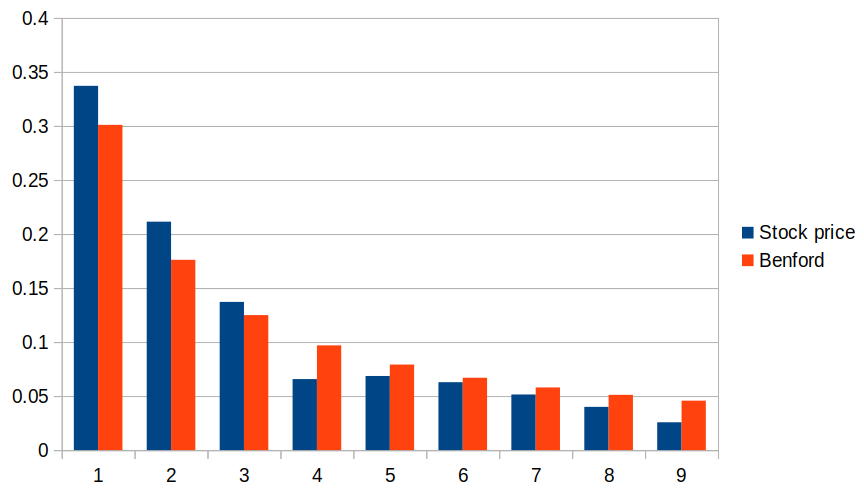
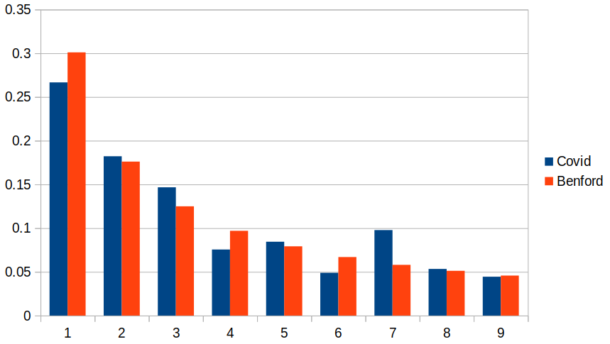
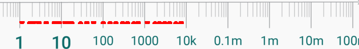

The peculiar Benford distribution
 Consider the stock prices of the 350 largest UK companies, at some specific
time. At the time of writing, the prices ranged from about 15 UK pounds
(Petropavlovsk PLC) to about 50,000 UK pounds per share (Personal Assets Trust
PLC). Now, of those 350 prices, what proportion do you think started with the
number "1"? Or the number "9"?
Consider the stock prices of the 350 largest UK companies, at some specific
time. At the time of writing, the prices ranged from about 15 UK pounds
(Petropavlovsk PLC) to about 50,000 UK pounds per share (Personal Assets Trust
PLC). Now, of those 350 prices, what proportion do you think started with the
number "1"? Or the number "9"?
With a spread of numbers this large, and no particular pattern, it's intuitively clear that one first digit is about as likely as any other. That is, we might assume that there is about a 1/9 probability of any given first digit.
Although intuitive, this conclusion is completely wrong. In fact, about three times more stock prices begin with the number "1" than we might expect. Only seven companies out of the 350 had a stock price beginning with "9".
Lest you think that this is a peculiarity of stock prices, I should point out that a huge number of naturally-occurring data sets have this property. It's also found in mathematical constructs. For example, the Fibonnaci numbers (1, 1, 2, 3, 5, 8...) show almost exactly the same distribution of first digits as UK stock prices.
The Benford distribution is surprisingly commonplace
These data sets, and many others, follow the Benford distribution, which is defined by a very simple formula:
P(N) = log (1 + 1 / N)
That is, the probability of a sample value beginning with the digit N is estimated by the simple (base-10) logarithmic relationship shown above.
The following chart shows the probability distribution of the first digits of UK stock prices alongside the theoretical Benford distribution.
Here's another example that I found quite surprising. Consider the numbers of reported Covid cases to date (I'm writing this in February 2022) in all the 225 countries in the world that report this data. These numbers ranged from 1 (Micronesia) to 78,646,582 (USA). Here's the distribution of first digits of this data, again compared to the theoretical Benford distribution.
It's not a perfect match, but it's disturbingly close. This data is taken from countries of different size, and with completely different Covid policies; as with the UK stock prices, there's no obvious relationship between the individual data items -- they might as well be considered random. And yet there is a clear bias to small values for the first digit in all these measurements.
The phenomenon is so commonplace that it's sometimes described as "Benford's law" which states, essentially, that:
In any set of numerical data, the first digits are likely to be small.
This is such a surprising result -- at least to me -- that I had to write a computer program to simulate different kinds of data distribution, and prove that the first digit did, indeed, tend to be small.
Benford-like distributions are most closely associated with population figures and financial transactions. In fact, departures from the predicted Benford distribution have been used to detect financial fraud -- it's quite difficult to fiddle the books in such a way that the Benford distribution of first digit remains intact. It turns out that there's also an interesting distribution of second digits that a fraudster would need to maintain -- but that's beyond the scope of this article.
The Benford distribution has this in common with the Gaussian (normal) distribution -- and probably little else: it occurs frequently in nature, and it's not entirely obvious why.
There's a lot of discussion about Benford's law on social media, with claims that a Benford distribution applies in all sorts of unexpected places. These claims can't be entirely dismissed, however outlandish some of them seem, because there are many kinds of data which we are certain -- on experimental grounds -- are governed by a Benford distribution, with little consensus about why. Still, there are potentially other explanations for Benford's law that should not be overlooked.
The mathematical basis for the Benford distribution
Let's see how a Benford distribution can arise.
Consider a variable A that is uniformly distributed in the range 1...10000. What is the distribution of Q = 10A ? As A gets larger then, of course, Q gets larger, but at an exponential rate. Q is, of course, not uniformly distributed in a linear domain, but it is uniformly distributed in a logarithmic domain.
The diagram below shows an example when samples from Q plotted on a logarithmic scale. It's not completely uniform -- not with a small-ish number of samples, but it would be uniform with a large sample set.
In short, Q = 10A for a uniformly distributed A is itself uniformly distributed on a logarithmic scale. For bases other than ten, the same result would hold, except that the range of the data on the logarithmic scale would be different.
If you look closely at the logarithmic scale, you'll see that the length of the line between 1 and 1.99 is the same as that between 10 and 19.9, and that between 100 and 199. All these lengths are somewhat longer than the line between 2 and 2.99, and much longer than that between 9 and 9.99.
If we distribute samples evenly along this line, there's likely to be more samples in the 1-2 range than in the 2-3 range, but the same (approximate) number in the 10-20 range. All numbers in the range 1-1.99 start with the digit "1". All numbers in the range 9-9.99 start with "9" -- but there are going to be far fewer of these, because the part of the number line corresponding to numbers starting with "9" is so short.
Since each order of magnitude on the logarithmic number line follows the same pattern, we only need to consider the portion between 1 and 10. The proportion of that segment that is occupied by numbers in the range 1-2 is
log(2) - 1og(1)
P(1) = --------------- = 0.301
log(10)
For any digit N, this generalizes to
log(N + 1) - log(N)
P(N) = -------------------
log(10)
Which, with a bit of algebra, and bearing in mind that log(10) = 1, gives us this result for the proportion of the line.
P(N) = log (1 + 1 / N)
The "P" here could equally stand for "probability", since the samples are evenly distributed along the line. This is the formula for the Benford distribution I introduced earlier.
In short, a Benford distribution arises when any number is raised to the power of a uniformly-distributed variable.
Other physical origins of the Benford distribution
There's another way of looking at this situation -- actually, it's mathematically equivalent, but has a different physical interpretation.
Multiplication in the linear domain is essentially addition in the logarithmic domain. So if we have a measurement that is derived from the product of a number of uniformly-distributed values, this measurement will tend to be linearly-distributed along a logarithmic scale. It will therefore tend to follow a Benford distribution.
So another real-world situation that might give rise to a Benford distribution is when some quantity is formed by multiplying other quantities that have a uniform distribution. A related scenario is one in which quantities are perturbed over time by scaling factors of varying size.
So does Benford's distribution explain Benford's law?
It's relatively easy to see how some real-world data sets can follow a Benford distribution. Populations, for example, tend to grow exponentially, with different regions showing different growth parameters. Interestingly, the populations of UK towns and cities don't follow Benford's law -- I checked. There are just too many towns with populations in the range 30,000 - 40,000. The first digit "3" predominates. However, US populations do appear to follow a Benford distribution pretty closely.
Similarly, we can see why mathematical constructs like Fibonacci numbers conform to a Benford distribution. Fibonacci numbers can be approximated as an exponential series, with the exponent being an integer (that is, the exponent is uniformly distributed). Anything series that can be approximated as an exponential will probably be at least somewhat Benford-like.
The mystery -- and I think it genuinely is a mystery -- is why so many distributions that have no clear exponential behaviour also follow a Benford distribution. Is the fact that the Covid case figures I described above follow an approximate Benford distribution merely a coincidence? What about the distribution of daily financial transactions on the New York Stock Exchange?
There are, in fact, data sets that are "Benford-like", without being real Benford distributions. In practice, many perfectly uniform distributions of numbers will have a first-digit distribution much like Benford, just because of the characteristics of the pool of numbers from which samples are drawn.
Consider numbers that lie in the range 1-32768 (that's 215 -- a point whose significance I'll return to later). The first 9,999 of these numbers have first digits that span the whole range 1-9. The second 10,000 numbers start with a "1". The next 10,000 start with a "2". That leaves 2768 numbers starting with "3". The only numbers that start with "4" and above are to be found in the first 9,999 numbers of the range, so there are comparatively few of them.
Purely because of the range of numbers, about 33% start with a "1", and only 4% with a "9". This pattern looks rather like a Benford distribution -- but it isn't. It's just a consequence of the fixed range of numbers.
It is the nature of digital computers that quantities are constrained to fixed ranges, usually powers of two. Numbers arising from computer operations are therefore unlikely to have a uniform distribution of first digits. I think this is the explanation for the proposition that is sometimes made, that the sizes of files on a computer's storage follow a Benford distribution. Maybe they do, but perhaps their sizes just lie within the conventional constraints of computer filesystems that, until recently, limited file sizes to 231 bytes. A uniform distribution in the range 1-231 looks quite Benford-like, just because of the structure of numbers in that range.
Of course, we have no convincing explanation for why many of the natural phenomena that follow a Benford distribution actually do so. Perhaps there is an explanation -- so far unknown -- why the sizes of computer files should do so as well.
In any event, there are other plausible explanations for observations of "Benford's law", other than that the Benford distribution is widely followed for reasons as yet unknown.